Heat Equation#
The fundamental goal of model reduction is to efficiently make physics-based predictions. Given synthetic or experimental data that was generated or collected under a certain set of conditions, we aim to construct a cost-effective model that produces accurate solutions under new sets of conditions. This tutorial explores the following prediction problems for the heat equation example of [PW16]:
Predicting forward in time.
Using new time-dependent boundary conditions.
Changing the system parameters (e.g., coefficients in the governing equation).
Problem Statement#
Governing Equations
Let \(\Omega = [0,L]\subset \mathbb{R}\) be the spatial domain indicated by the variable \(x\), and let \([0,T]\subset\mathbb{R}\) be the time domain with variable \(t\). We consider the one-dimensional heat equation with non-homogeneous Dirichlet boundary conditions,
where the constant \(\mu > 0\) is the thermal diffusivity, \(\alpha>0\) is constant, and \(q(x,t;\mu)\) is the unknown state variable. This is a model for a one-dimensional rod conducting heat with a fixed initial heat profile. The temperature at the ends of the rod are governed by the input function \(u(t)\), but heat is allowed to diffuse through the rod and flow out at the ends of the domain. We aim to numerically solve for \(q(x,t;\mu)\) efficiently for all \(t \in [0,T]\) and/or for various choices of \(u(t)\) and \(\mu\).
Note
This problem can be solved with a straightforward discretization of the spatial domain \(\Omega\) with little computational effort, so using model reduction to speed up the computation is not highly beneficial. However, the way that the user interacts with the package for this problem is highly similar for more complex problems.
Prediction in Time#
Our first objective is to get solutions in time beyond a set of available training data.
{kind=link}
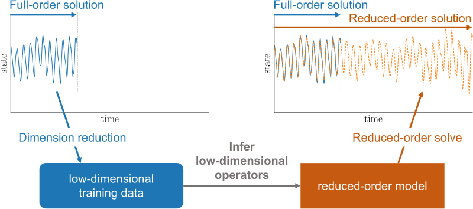
Objective
Construct a reduced-order model (ROM) of the heat equation that is predictive in time. In other words, we will observe data for \(t \in [0, T']\) with \(T' < T\), use that data to construct the ROM, and use the ROM to predict the solution for the entire time domain \([0,T]\).
Full-order Model Definition#
As in the last tutorial, we use a centered finite difference approximation for the spatial derivative to arrive at a first-order system, this time of the form
Discretization details
We take an equidistant grid \(\{x_i\}_{i=0}^{n+1} \subset \Omega\),
The boundary conditions prescribe \(q(x_0,t) = q(x_{n+1},t) = u(t)\). Our goal is to compute \(q(x,t)\) at the interior spatial points \(x_{1},x_{2},\ldots,x_{n}\) for various \(t\in[0,T]\), so we consider the state vector \(\mathbf{q}(t) = [~q(x_{1}, t)~\cdots~q(x_{n}, t)~]^{\top}\in\mathbb{R}^n\) and derive a system governing the evolution of \(\mathbf{q}(t)\) in time.
Approximating the spatial derivative with a central finite difference approximation,
we arrive at the following matrices for the full-order model.
The state \(\mathbf{q}(t;\mu)\) implicity depends on the parameter \(\mu\) because the operators \(\mathbf{A}(\mu)\) and \(\mathbf{B}(\mu)\) are parameterized by \(\mu\). For now, we set \(\mu = 1\) and simply write
This is the full-order model (FOM), which we will use to generate training data for the time domain \([0, T'] \subset [0, T]\).
Training Data Generation#
Let \(L = T = \mu = 1\), \(\alpha = 100\), and suppose for now that the boundary conditions are given by the constant input function \(u(t) \equiv 1\). We begin by simulating the full-order system described above with a uniform time step \(\delta t = 10^{-3}\), yielding \(10^3 + 1 = 1001\) total time steps (1000 steps past the initial condition). We will assume that we can only observe the first \(k = 100\) time steps and use the ROM to predict the remaining \(901\) steps.
import numpy as np
import scipy.linalg as la
import scipy.sparse as sparse
import matplotlib.pyplot as plt
import opinf
opinf.utils.mpl_config()
# Construct the spatial domain.
L = 1 # Spatial domain length.
n = 2**7 - 1 # Spatial grid size.
x_all = np.linspace(0, L, n + 2) # Full spatial grid.
x = x_all[1:-1] # Interior spatial grid (where q is unknown).
dx = x[1] - x[0] # Spatial resolution.
# Construct the temporal domain.
T = 1 # Temporal domain length (final simulation time).
K = T * 10**3 + 1 # Temporal grid size.
t = np.linspace(0, T, K) # Temporal grid.
dt = t[1] - t[0] # Temporal resolution.
print(f"Spatial step size\tdx = {dx}")
print(f"Temporal step size\tdt = {dt}")
Spatial step size dx = 0.0078125
Temporal step size dt = 0.001
# Construct the full-order state matrix A.
dx2inv = 1 / dx**2
diags = np.array([1, -2, 1]) * dx2inv
A = sparse.diags(diags, [-1, 0, 1], (n, n))
# Construct the full-order input matrix B.
B = np.zeros_like(x)
B[0], B[-1] = dx2inv, dx2inv
# Define the inputs.
input_func = np.ones_like # Constant input function u(t) = 1.
U_all = input_func(t) # Inputs over the time domain.
# Construct the initial condition.
alpha = 100
q0 = np.exp(alpha * (x - 1)) + np.exp(-alpha * x) - np.exp(-alpha)
print(f"shape of A:\t{A.shape}")
print(f"shape of B:\t{B.shape}")
print(f"shape of q0:\t{q0.shape}")
shape of A: (127, 127)
shape of B: (127,)
shape of q0: (127,)
Since this is a diffusive problem, we will use the implicit (backward) Euler method for solving the ODEs. For the problem \(\frac{\text{d}}{\text{d}t}\mathbf{q}(t) = \mathbf{f}(t, \mathbf{q}(t), \mathbf{u}(t))\), implicit Euler is defined by the rule
where \(\mathbf{q}_{j} := \mathbf{q}(t_{j})\) and \(u_{j} := u(t_{j})\). With the form \(\mathbf{f}(t,\mathbf{q}(t),u(t)) = \mathbf{A}\mathbf{q}(t) + \mathbf{B}u(t)\), this becomes
where \(\mathbf{I}\) is the identity matrix.
Show code cell source
def implicit_euler(t, q0, A, B, U):
"""Solve the system
dq / dt = Aq(t) + Bu(t), q(0) = q0,
over a uniform time domain via the implicit Euler method.
Parameters
----------
t : (k,) ndarray
Uniform time array over which to solve the ODE.
q0 : (n,) ndarray
Initial condition.
A : (n, n) ndarray
State matrix.
B : (n,) or (n, 1) ndarray
Input matrix.
U : (k,) ndarray
Inputs over the time array.
Returns
-------
q : (n, k) ndarray
Solution to the ODE at time t; that is, q[:,j] is the
computed solution corresponding to time t[j].
"""
# Check and store dimensions.
k = len(t)
n = len(q0)
B = np.ravel(B)
assert A.shape == (n, n)
assert B.shape == (n,)
assert U.shape == (k,)
I = np.eye(n)
# Check that the time step is uniform.
dt = t[1] - t[0]
assert np.allclose(np.diff(t), dt)
# Factor I - dt*A for quick solving at each time step.
factored = la.lu_factor(I - dt * A)
# Solve the problem by stepping in time.
q = np.empty((n, k))
q[:, 0] = q0.copy()
for j in range(1, k):
q[:, j] = la.lu_solve(factored, q[:, j - 1] + dt * B * U[j])
return q
# Compute snapshots by solving the equation with implicit_euler().
Q_all = implicit_euler(t, q0, A, B, U_all)
# Retain only the first k snapshots/inputs for training the ROM.
k = 100 # Number of training snapshots.
t_train = t[:k] # Temporal domain for training snapshots.
Q = Q_all[:, :k] # Observed snapshots.
Finally, we visualize the snapshots to get a sense of how the solution looks qualitatively.
Show code cell source
def plot_heat_data(Z, title, ax=None):
"""Visualize temperature data in space and time."""
if ax is None:
_, ax = plt.subplots(1, 1)
# Plot a few snapshots over the spatial domain.
sample_columns = [0, 10, 20, 40, 80, 160, 320, 640]
sample_columns = [0] + [2**d for d in range(10)]
color = iter(plt.cm.viridis_r(np.linspace(0.05, 1, len(sample_columns))))
while sample_columns[-1] > Z.shape[1]:
sample_columns.pop()
leftBC, rightBC = [input_func(x_all[0])], [input_func(x_all[-1])]
for j in sample_columns:
q_all = np.concatenate([leftBC, Z[:, j], rightBC])
ax.plot(x_all, q_all, color=next(color), label=rf"$q(x,t_{{{j}}})$")
ax.set_xlim(x_all[0], x_all[-1])
ax.set_xlabel(r"$x$")
ax.set_ylabel(r"$q(x,t)$")
ax.legend(loc=(1.05, 0.05))
ax.set_title(title)
fig, [ax1, ax2] = plt.subplots(1, 2)
plot_heat_data(Q, "Snapshot data for training", ax1)
plot_heat_data(Q_all, "Full-order model solution", ax2)
ax1.legend([])
plt.show()
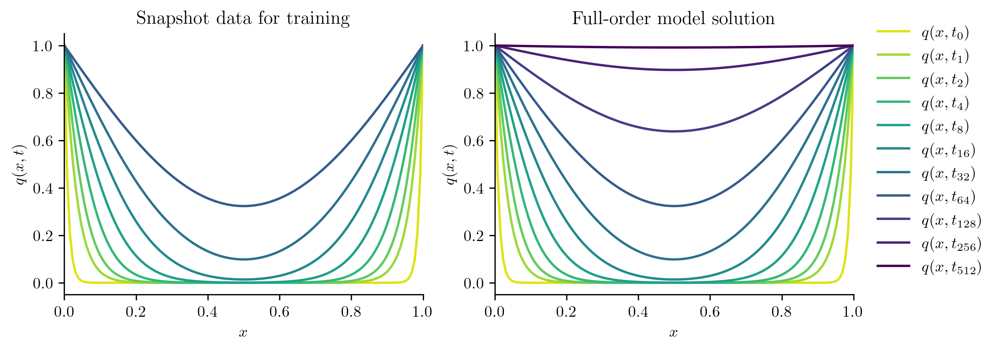
ROM Construction#
Now that we have snapshot data \(\mathbf{Q} \in \mathbb{R}^{n \times k}\), we can construct a basis matrix \(\mathbf{V}_r \in \mathbb{R}^{n \times r}\). The basis matrix relates the high-dimensional and low-dimensional by \(\mathbf{q}(t) = \mathbf{V}_{r}\widehat{\mathbf{q}}(t)\).
For operator inference (OpInf), we often use the proper orthogonal decomposition (POD) basis. The integer \(r\), which defines the dimension of the reduced-order model to be constructed, is usually determined by how quickly the singular values of \(\mathbf{Q}\) decay. In this example, we choose the minimal \(r\) such that the residual energy is less than a given tolerance \(\varepsilon\), i.e.,
# Compute the POD basis, using the residual energy decay to select r.
basis = opinf.basis.PODBasis(residual_energy=1e-8).fit(Q)
print(basis)
# Check the decay of the singular values and the associated residual energy.
basis.plot_energy(right=25)
plt.show()
PODBasis
Full state dimension n = 127
Reduced state dimension r = 8
Cumulative energy: 100.000000%
Residual energy: 3.0523e-10
100 basis vectors available
SVD solver: scipy.linalg.svd()
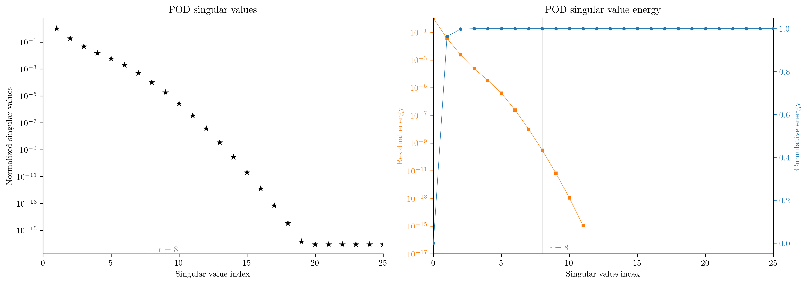
Now we can learn the reduced model with OpInf. Because the full-order model is of the form \(\frac{\text{d}}{\text{d}t}\mathbf{q}(t) = \mathbf{A}\mathbf{q}(t) + \mathbf{B}u(t)\), we construct a reduced-order model of the form \(\frac{\text{d}}{\text{d}t}\widehat{\mathbf{q}}(t) = \widehat{\mathbf{A}}\widehat{\mathbf{q}}(t) + \widehat{\mathbf{B}}u(t)\).
# Instantiate the model.
model = opinf.models.ContinuousModel(
operators=[
opinf.operators.LinearOperator(),
opinf.operators.InputOperator(),
]
)
To train the model, we need to compress the snapshot data to the low-dimensional subspace defined by the basis. We also need the time derivatives \(\frac{d}{dt}\mathbf{q}(t)\) of the training snapshots. If \(\mathbf{A}\) and \(\mathbf{B}\) are known, we can set \(\dot{\mathbf{q}}_{j} = \mathbf{A}\mathbf{q}_{j} + \mathbf{B}u_{j}\). If we do not have access to \(\mathbf{A}\) and \(\mathbf{B}\), we can estimate the time derivatives using finite differences. In this case, we use first-order backward differences.
# Compress the snapshot data.
Q_compressed = basis.compress(Q)
# Estimate time derivatives (dq/dt) for each training snapshot.
Q_train, Qdot_train, U_train = opinf.ddt.bwd1(Q_compressed, dt, U_all[:k])
print(f"shape of Q_train:\t{Q_train.shape}")
print(f"shape of Qdot_train:\t{Qdot_train.shape}")
print(f"shape of U_train:\t{U_train.shape}")
shape of Q_train: (8, 99)
shape of Qdot_train: (8, 99)
shape of U_train: (99,)
# Train the reduced-order model.
model.fit(states=Q_train, ddts=Qdot_train, inputs=U_train)
print(model)
Model structure: dq / dt = Aq(t) + Bu(t)
State dimension r = 8
Input dimension m = 1
Model Evaluation#
Like the FOM, we integrate the learned ROM using the implicit Euler method, using the reduced-order operators \(\widehat{\mathbf{A}}\) and \(\widehat{\mathbf{B}}\) and the initial condition \(\widehat{\mathbf{q}}_{0} = \mathbf{V}^{\mathsf{T}}\mathbf{q}_{0}\). The resulting low-dimensional state vectors are reconstructed in the full-dimensional space via \(\mathbf{q}(t) = \mathbf{V}_{r}\widehat{\mathbf{q}}(t)\).
# Express the initial condition in the coordinates of the basis.
q0_ = basis.compress(q0)
# Solve the reduced-order model using Implicit Euler.
Q_ROM = basis.decompress(
implicit_euler(t, q0_, model.A_.entries, model.B_.entries, U_all)
)
fig, [ax1, ax2] = plt.subplots(1, 2)
plot_heat_data(Q_ROM, "Reduced-order model solution", ax1)
plot_heat_data(Q_all, "Full-order model solution", ax2)
ax1.legend([])
plt.show()
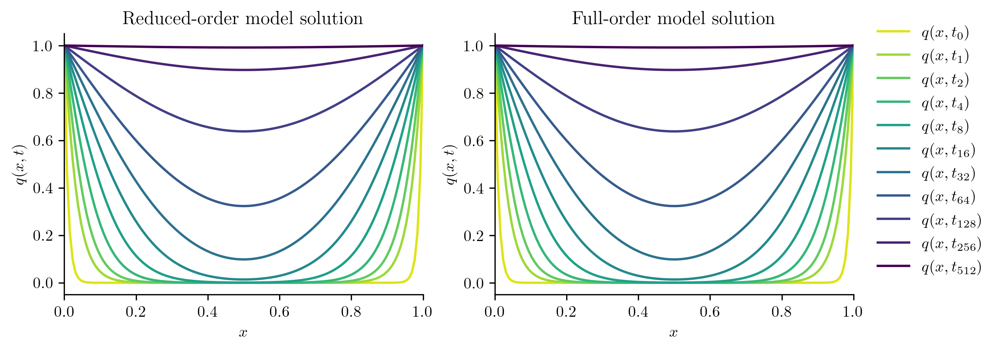
To quantify the accuracy of the ROM, we evaluate the ROM solution error in the Frobenius norm and compare it to the projection error,
where \(\mathbf{Q}_{\text{all}}\) is the full-order model solution over the entire time domain and \(\mathbf{Q}_{\text{ROM}}\) is the reduced-order model solution.
rel_froerr_projection = basis.projection_error(Q_all, relative=True)
rel_froerr_opinf = opinf.post.frobenius_error(Q_all, Q_ROM)[1]
print(
"Relative Frobenius-norm errors",
"-" * 33,
f"projection error:\t{rel_froerr_projection:%}",
f"OpInf ROM error:\t{rel_froerr_opinf:%}",
sep="\n",
)
Relative Frobenius-norm errors
---------------------------------
projection error: 0.002573%
OpInf ROM error: 0.002577%
The ROM error cannot be better than the projection error, but the two are pretty close. We also compare the ROM error with the projection error as a function of time, i.e.,
where \(\mathbf{q}(t)\) is the full-order solution and \(\mathbf{q}_{\text{ROM}}(t)\) is the ROM solution at time \(t\).
Tip
In this problem, \(\mathbf{q}(t) \to \mathbf{0}\) as \(t\) increases, so a relative error may not be appropriate since \(\|\mathbf{q}(t)\|_{2}\) appears in the denominator. In situations like this, consider using the normalized absolute error by replacing the denominator with \(\max_{\tau\in[0,T]}\|\mathbf{q}(t)\|,\) for example:
Use normalize=True in opinf.post.lp_error() to use this error measure instead of the relative error.
projerr_in_time = opinf.post.lp_error(
Q_all,
basis.project(Q_all),
normalize=True,
)[1]
def plot_errors_over_time(Zlist, labels):
"""Plot normalized absolute projection error and ROM errors
as a function of time.
Parameters
----------
Zlist : list((n, k) ndarrays)
List of reduced-order model solutions.
labels : list(str)
Labels for each of the reduced-order models.
"""
fig, ax = plt.subplots(1, 1)
ax.semilogy(t, projerr_in_time, "C3", label="Projection Error")
colors = ["C0", "C5"]
for Z, label, c in zip(Zlist, labels, colors[: len(Zlist)]):
rel_err = opinf.post.lp_error(Q_all, Z, normalize=True)[1]
plt.semilogy(t, rel_err, c, label=label)
ax.set_xlim(t[0], t[-1])
ax.set_xlabel(r"$t$")
ax.set_ylabel("Normalized absolute error")
ax.legend(loc="lower right")
plt.show()
plot_errors_over_time([Q_ROM], ["ROM Error"])
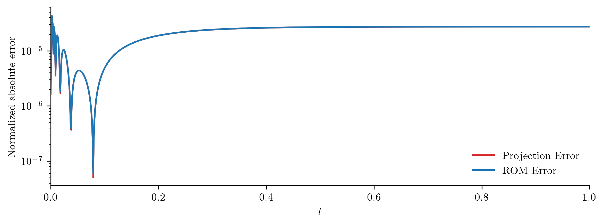
Comparison with Intrusive Projection#
In the limit as the amount of training data \(k\) and the dimension \(r\) increases, the reduced operators \(\widehat{\mathbf{A}}\) and \(\widehat{\mathbf{B}}\) learned through OpInf converge to the corresponding operators obtained through intrusive projection,
Computing \(\widetilde{\mathbf{A}}\) and \(\widetilde{\mathbf{B}}\) is considered “intrusive” because it requires explicit access to the full-order operators \(\mathbf{A}\) and \(\mathbf{B}\).
Vr = basis.entries
Atilde = Vr.T @ A @ Vr
Btilde = Vr.T @ B
q0_ = basis.compress(q0)
Q_ROM_intrusive = basis.decompress(
implicit_euler(t, q0_, Atilde, Btilde, U_all)
)
fig, [ax1, ax2] = plt.subplots(1, 2)
plot_heat_data(Q_ROM, "OpInf ROM solution", ax1)
plot_heat_data(Q_ROM_intrusive, "Intrusive ROM solution", ax2)
ax1.legend([])
plt.show()
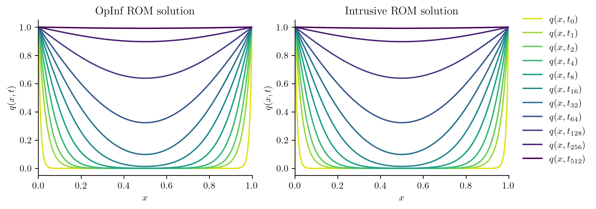
rel_froerr_intrusive = opinf.post.frobenius_error(Q_all, Q_ROM_intrusive)[1]
print(
"Relative Frobenius-norm errors",
"-" * 33,
f"projection error:\t{rel_froerr_projection:%}",
f"OpInf ROM error:\t{rel_froerr_opinf:%}",
f"intrusive ROM error:\t{rel_froerr_intrusive:%}",
sep="\n",
)
Relative Frobenius-norm errors
---------------------------------
projection error: 0.002573%
OpInf ROM error: 0.002577%
intrusive ROM error: 0.003508%
plot_errors_over_time(
[Q_ROM, Q_ROM_intrusive],
["OpInf ROM Error", "Intrusive ROM Error"],
)
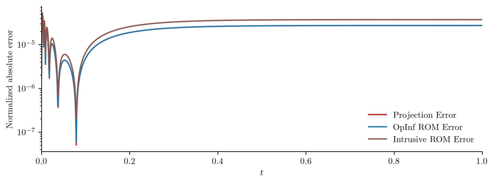
Let’s repeat the experiment with different choices of \(r\) to see how the size of the ROM affects its accuracy.
full_order_operators = [
opinf.operators.LinearOperator(A.toarray()),
opinf.operators.InputOperator(B),
]
def run_trial(r):
"""Do OpInf / intrusive ROM prediction with r basis vectors."""
basis.set_dimension(num_vectors=r)
q0_ = basis.compress(q0)
Q_compressed = basis.compress(Q)
Q_train, Qdot_train, U_train = opinf.ddt.bwd1(Q_compressed, dt, U_all[:k])
intrusive_reduced_operators = [
op.galerkin(basis.entries) for op in full_order_operators
]
# Construct and simulate the intrusive ROM.
model_intrusive = opinf.models.ContinuousModel(intrusive_reduced_operators)
Q_ROM_intrusive = basis.decompress(
implicit_euler(
t,
q0_,
model_intrusive.A_.entries,
model_intrusive.B_.entries,
U_all,
)
)
# Construct and simulate the operator inference ROM.
model_opinf = opinf.models.ContinuousModel("AB").fit(
states=Q_train,
ddts=Qdot_train,
inputs=U_train,
)
Q_ROM_opinf = basis.decompress(
implicit_euler(
t,
q0_,
model_opinf.A_.entries,
model_opinf.B_.entries,
U_all,
)
)
# Calculate errors.
projection_error = basis.projection_error(Q_all, relative=True)
intrusive_error = opinf.post.frobenius_error(Q_all, Q_ROM_intrusive)[1]
opinf_error = opinf.post.frobenius_error(Q_all, Q_ROM_opinf)[1]
return projection_error, intrusive_error, opinf_error
Show code cell source
def plot_state_error(rmax, runner, ylabel):
"""Run the experiment for r = 1, ..., rmax and plot results."""
rs = np.arange(1, rmax + 1)
err_projection, err_intrusive, err_opinf = zip(*[runner(r) for r in rs])
_, ax = plt.subplots(1, 1)
ax.semilogy(
rs,
err_projection,
"C3-",
label="projection error",
lw=1,
)
ax.semilogy(
rs,
err_intrusive,
"C5+-",
label="intrusive ROM error",
lw=1,
mew=2,
)
ax.semilogy(
rs,
err_opinf,
"C0o-",
label="OpInf ROM error",
lw=1,
mfc="none",
mec="C0",
mew=1.5,
)
ax.set_xlim(rs.min(), rs.max())
ax.set_xticks(rs, [str(int(r)) for r in rs])
ax.set_xlabel(r"Reduced dimension $r$")
ax.set_ylabel(ylabel)
ax.grid(ls=":")
ax.legend(loc="upper right", fontsize=14, frameon=True, framealpha=1)
plt.show()
plot_state_error(15, run_trial, "Relative Frobenius-norm error")
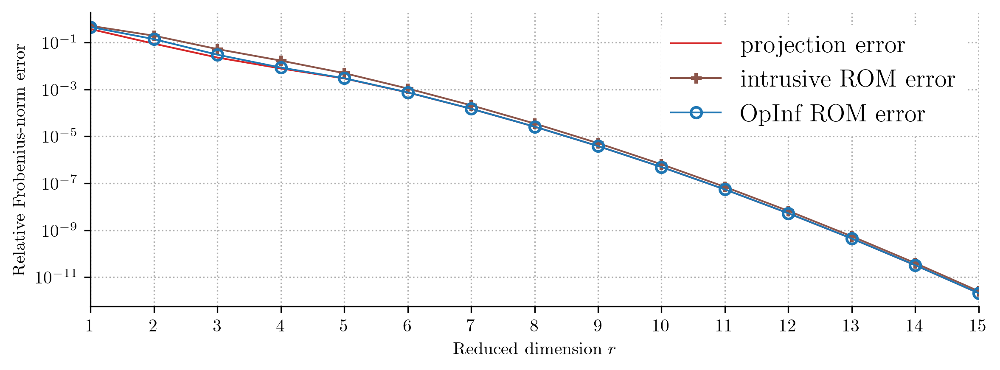
Takeaway
In this case, the operator inference and intrusive ROMs give essentially the same result. However, the operator inference ROM successfully emulates the FOM without explicit access to \(\mathbf{A}\) and \(\mathbf{B}\).
On Convergence
The figure above conveys a sense of convergence: as the reduced dimension \(r\) increases, the ROM error decreases. In more complex problems, the error does not always decrease monotonically as \(r\) increases. In fact, at some point as \(r\) increases performance often deteriorates significantly due to poor conditioning in the operator inference regression. In practice, choose a reduced dimension \(r\) that balances solution accuracy with computational speed, not too small but also not too large.
New Boundary Conditions#
Our heat equation has Dirichlet boundary conditions given by
In this section we consider the role of \(u(t)\), which governs the boundary equations.
Objective
Construct a reduced-order model (ROM) of the heat equation that can be used for various sets of boundary conditions. We will observe data for some \(u(t)\) and use the ROM to predict the solution for new choices of \(u(t)\).
Note that the full-order model defined in the previous section is valid for arbitrary \(u(t)\).
Training Data Generation#
# Define several sets of boundary condition inputs.
Us_all = [
np.ones_like(t), # u(t) = 1.0
np.exp(-t), # u(t) = e^(-t)
1 + t**2 / 2, # u(t) = 1 + .5 t^2
1 - np.sin(np.pi * t) / 2, # u(t) = 1 - sin(πt)/2
1 - np.sin(3 * np.pi * t) / 3, # u(t) = 1 - sin(3πt)/2
1 + 25 * (t * (t - 1)) ** 3, # u(t) = 1 + 25(t(t - 1))^3
1 + np.sin(np.pi * t) * np.exp(-2 * t), # u(t) = 1 + sin(πt)e^(-t)
]
k = 300 # Number of training snapshots.
Note that \(u(0) = 1\) for each of our boundary inputs, which is consistent with the initial condition q0 used earlier.
We will gather data for the first few inputs, learn a ROM from the data, and test the ROM on the remaining inputs.
# Split into training / testing sets.
Us_all_train = Us_all[:4]
Us_all_test = Us_all[4:]
# Visualize the input functions.
fig, [ax1, ax2] = plt.subplots(1, 2)
c = 0
for U in Us_all_train:
ax1.plot(t, U, color=f"C{c}")
c += 1
for U in Us_all_test:
ax2.plot(t, U, color=f"C{c}")
c += 1
ax1.set_title("Training inputs")
ax2.set_title("Testing inputs")
ax1.axvline(t[k], color="k")
for ax in (ax1, ax2):
ax.set_xlim(0, 1)
ax.set_xlabel(r"$t$")
ax.set_ylabel(r"$u(t)$")
plt.show()
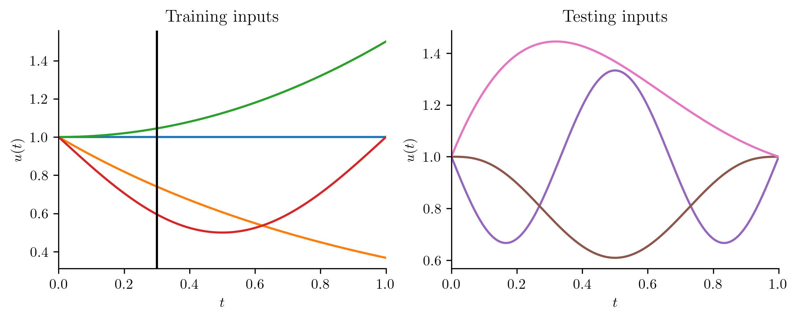
We only record the first \(k\) snapshots corresponding to each of the training inputs, so we are still predicting in time as in the previous section.
# Compute snapshots by solving the equation with implicit_euler().
Qs_all = [implicit_euler(t, q0, A, B, U) for U in Us_all]
Qs_all_train = Qs_all[: len(Us_all_train)]
Qs_all_test = Qs_all[len(Us_all_train) :]
# Retain only the first k snapshots/inputs for training the ROM.
t_train = t[:k] # Temporal domain for training snapshots.
Qs = [Q[:, :k] for Q in Qs_all_train] # Observed snapshots.
# Compute time derivatives (dq/dt) for each snapshot and stack training data.
Qs_train, Qdots_train, Us_train = [
np.hstack(X)
for X in zip(
*[opinf.ddt.bwd1(Q, dt, U[:k]) for Q, U in zip(Qs, Us_all_train)]
)
]
ROM Construction#
# Compute a basis from all of the training snapshots.
basis = opinf.basis.PODBasis(residual_energy=1e-8).fit(Qs)
print(basis)
# Express the initial condition in the coordinates of the new basis.
q0_ = basis.compress(q0)
PODBasis
Full state dimension n = 127
Reduced state dimension r = 7
Cumulative energy: 100.000000%
Residual energy: 2.1863e-09
127 basis vectors available
SVD solver: scipy.linalg.svd()
# Train a reduced-order model using the training data.
model = opinf.models.ContinuousModel("AB")
model.fit(
states=basis.compress(Qs_train),
ddts=basis.compress(Qdots_train),
inputs=Us_train,
)
print(model)
Model structure: dq / dt = Aq(t) + Bu(t)
State dimension r = 7
Input dimension m = 1
ROM Evaluation#
We now test the learned ROM on both the training and testing inputs.
def plot_errors_over_time_inputs(Q_ROMs, Q_trues, cidx=0):
"""Plot normalized absolute projection error and ROM errors
as a function of time.
Parameters
----------
Q_ROMs : list((n, k) ndarrays)
List of reduced-order model solutions.
Q_trues : list(str)
List of full-order model solutions.
"""
_, ax = plt.subplots(1, 1)
for Q_ROM, Q_true in zip(Q_ROMs, Q_trues):
rel_err = opinf.post.lp_error(Q_true, Q_ROM, normalize=True)[1]
plt.semilogy(t, rel_err, color=f"C{cidx}")
cidx += 1
ax.set_xlim(t[0], t[-1])
ax.set_xlabel(r"$t$")
ax.set_ylabel("Normalized absolute error")
# Test ROM accuracy on the training inputs.
Qs_ROM_train = [
basis.decompress(
implicit_euler(t, q0_, model.A_.entries, model.B_.entries, U)
)
for U in Us_all_train
]
plot_errors_over_time_inputs(Qs_ROM_train, Qs_all_train)
plt.title("ROM error with training inputs")
# Test ROM accuracy on the testing inputs.
Qs_ROM_test = [
basis.decompress(
implicit_euler(t, q0_, model.A_.entries, model.B_.entries, U)
)
for U in Us_all_test
]
plot_errors_over_time_inputs(Qs_ROM_test, Qs_all_test, cidx=len(Qs_ROM_train))
plt.title("ROM error with testing inputs")
plt.show()
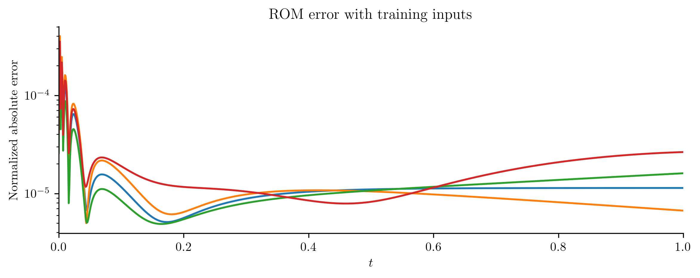
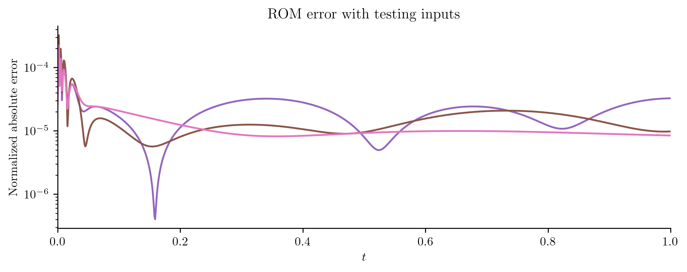
In this experiment, the training and testing error are similar and small (less than 0.1%) throughout the time domain. We conclude this section by checking the average ROM error on the test inputs as a function of basis size.
def run_trial_inputs(r):
"""Do OpInf / intrusive ROM prediction with r basis vectors."""
basis.set_dimension(num_vectors=r)
q0_ = basis.compress(q0)
# Construct the intrusive ROM.
model_intrusive = opinf.models.ContinuousModel(
[op.galerkin(basis.entries) for op in full_order_operators]
)
# Construct the operator inference ROM from the training data.
model_opinf = opinf.models.ContinuousModel(operators="AB")
model_opinf.fit(
states=basis.compress(Qs_train),
ddts=basis.compress(Qdots_train),
inputs=Us_train,
)
# Test the ROMs at each testing input.
projection_error, intrusive_error, opinf_error = 0, 0, 0
for Q, U in zip(Qs_all_test, Us_all_test):
# Simulate the intrusive ROM for this testing input.
Q_ROM_intrusive = basis.decompress(
implicit_euler(
t,
q0_,
model_intrusive.A_.entries,
model_intrusive.B_.entries,
U,
)
)
# Simulate the operator inference ROM for this testing input.
Q_ROM_opinf = basis.decompress(
implicit_euler(
t, q0_, model_opinf.A_.entries, model_opinf.B_.entries, U
)
)
# Calculate errors.
projection_error += basis.projection_error(Q, relative=True)
intrusive_error += opinf.post.frobenius_error(Q, Q_ROM_intrusive)[1]
opinf_error += opinf.post.frobenius_error(Q, Q_ROM_opinf)[1]
# Average the relative errors.
projection_error /= len(Us_all_test)
intrusive_error /= len(Us_all_test)
opinf_error /= len(Us_all_test)
return projection_error, intrusive_error, opinf_error
plot_state_error(
15,
run_trial_inputs,
"Average relative\nFrobenius-norm error",
)
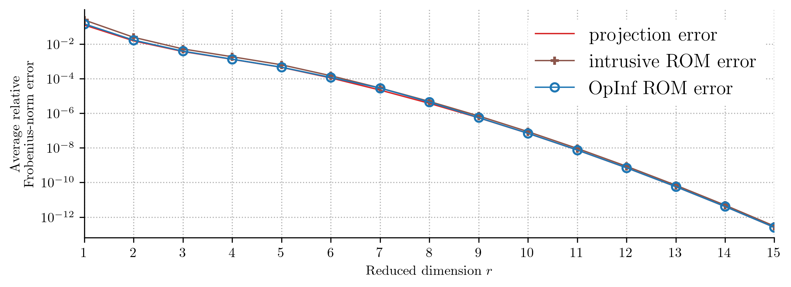
This experiment shows that the operator inference ROMs is robust to new boundary conditions; in other words, the ROM learns an input operator \(\widehat{\mathbf{B}}\) that performs well for multiple choices of the input \(u(t)\).
Prediction in Parameter Space#
Recall the governing equation,
In this section we examine the role of the constant \(\mu > 0\), the heat diffusivity parameter.
Objective
Construct a ROM of the heat equation that can be solved for different choices of the diffusivity parameter \(\mu > 0\). We will observe data for a few values of \(\mu\) and use the ROM to predict the solution for new values of \(\mu\). As before, we also aim to be predictive in time.
Full-order Model Definition#
We solved this problem earlier for fixed \(\mu = 1\). For variable \(\mu\), (7) defines the full-order model:
Note that \(\mathbf{A}(\mu) = \mu \mathbf{A}(1)\) and \(\mathbf{B}(\mu) = \mu \mathbf{B}(1)\), and that \(\mathbf{A}(1)\) and \(\mathbf{B}(1)\) are the full-order operators we constructed previously.
Training Data Generation#
We consider the parameter domain \(\mathcal{D} = [.1, 10] \subset \mathbb{R}\). Taking \(s\) logarithmically spaced samples \(\{\mu_i\}_{i=1}^{s}\subset\mathcal{D}\), we solve the full-order model over \([0, T']\) for each parameter sample. For each parameter \(\mu_{i}\), the resulting snapshots matrix is denoted as \(\mathbf{Q}(\mu_{i})\in \mathbb{R}^{n \times k}\). We choose \(s = 10\) training parameters in the following experiment.
# Get s logarithmically spaced paraneter values from D = [.1, 10].
s = 10 # Number of parameter samples.
params = np.logspace(-1, 1, s)
params
array([ 0.1 , 0.16681005, 0.27825594, 0.46415888, 0.77426368,
1.29154967, 2.15443469, 3.59381366, 5.9948425 , 10. ])
# Retain only the first k snapshots/inputs for training the ROM.
k = 600 # Number of training snapshots.
t_train = t[:k] # Temporal domain for training snapshots.
U_train = U_all[:k]
# Solve the full-order model at each of the parameter samples.
Qs = [implicit_euler(t_train, q0, p * A, p * B, U_train) for p in params]
Qs_train, Qdots_train, Us_train = zip(
*[opinf.ddt.bwd1(Q, dt, U_train) for Q in Qs]
)
ROM Construction#
A (global) POD basis can be constructed from the concatenation of the individual snapshot matrices,
We can select the reduced dimension \(r\) as before by examining the residual energy of the singular values.
# Compute the POD basis, using the residual energy decay to select r.
basis = opinf.basis.PODBasis(residual_energy=1e-8).fit(Qs)
print(basis)
basis.plot_energy(right=30)
plt.show()
PODBasis
Full state dimension n = 127
Reduced state dimension r = 8
Cumulative energy: 100.000000%
Residual energy: 1.5883e-09
127 basis vectors available
SVD solver: scipy.linalg.svd()
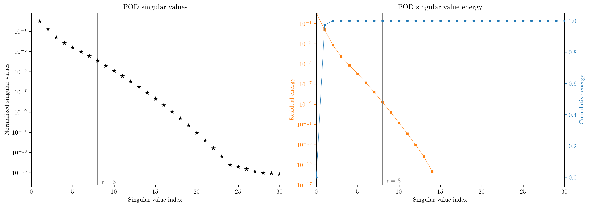
Alternatively, we could choose \(r\) so that the average relative projection error,
is below a certain threshold, say \(10^{-5}\).
def average_relative_projection_error(r):
"""Compute the average relative projection error with r basis vectors."""
oldr = basis.reduced_state_dimension
basis.set_dimension(num_vectors=r)
avgerr = np.mean([basis.projection_error(Q, relative=True) for Q in Qs])
basis.set_dimension(num_vectors=oldr)
return avgerr
Show code cell source
rs = np.arange(1, 21)
errors = [average_relative_projection_error(r) for r in rs]
fig, ax = plt.subplots(1, 1)
ax.axhline(1e-5, color="gray", lw=1)
ax.axvline(10, color="gray", lw=1)
ax.semilogy(rs, errors, "C3.-", ms=10)
ax.set_xticks(rs[::2])
ax.set_xlabel(r"$r$")
ax.set_ylabel("Average relative\nprojection error")
plt.show()
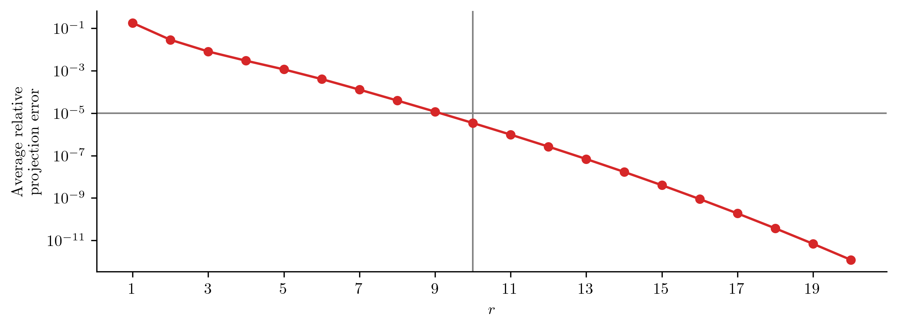
Based on these criteria, we choose \(r = 10\).
basis.set_dimension(num_vectors=10)
Interpolatory Operator Inference#
There are several strategies to account for the parameter \(\mu\). The reduced-order operators obtained through Galerkin projection are given by
Here, we perform interpolation on the entries of the reduced-order operators learned for each parameter sample. This means we learn a separate ROM for each \(\mu_i\), \(i=1, \ldots, s\), obtaining reduced-order operators \(\widehat{\mathbf{A}}(\mu_{i})\) and \(\widehat{\mathbf{B}}(\mu_{i})\).
Then, for a new parameter value \(\bar{\mu}\in\mathcal{D}\), we interpolate the entries of the learned reduced model operators to create a new reduced model corresponding to \(\bar{\mu}\in\mathcal{D}\).
The opinf.models.InterpolatedContinuousModel class encapsulates this process.
# Learn reduced models for each parameter value.
model = opinf.models.InterpolatedContinuousModel("AB")
model.fit(
parameters=params,
states=basis.compress(Qs_train),
ddts=basis.compress(Qdots_train),
inputs=Us_train,
)
<opinf.models.mono._parametric.InterpolatedContinuousModel at 0x30785a180>
ROM Evaluation#
To test the ROM, we take \(s - 1\) parameter values that lie between the training parameter values and compute the average relative state error,
where \(\mathbf{Q}_{\text{ROM}}(\mu_{i})\) is the ROM solution at the \(i\)-th test parameter value \(\mu_{i}\).
params_test = np.sqrt(params[:-1] * params[1:])
params_test
array([0.12915497, 0.21544347, 0.35938137, 0.59948425, 1. ,
1.66810054, 2.7825594 , 4.64158883, 7.74263683])
full_order_model = opinf.models.InterpolatedContinuousModel(
[
opinf.operators.InterpolatedLinearOperator(
params, [p * A.toarray() for p in params]
),
opinf.operators.InterpolatedInputOperator(
params, [p * B for p in params]
),
]
)
def run_trial_parametric(r):
"""Do OpInf / intrusive ROM prediction with r basis vectors."""
basis.set_dimension(num_vectors=r)
q0_ = basis.compress(q0)
# Compute the intrusive ROM.
model_intrusive = full_order_model.galerkin(basis.entries)
# Learn an operator inference ROM from the training data.
model_opinf = opinf.models.InterpolatedContinuousModel(
operators="AB",
solver=opinf.lstsq.L2Solver(1e-12),
).fit(
parameters=params,
states=basis.compress(Qs_train),
ddts=basis.compress(Qdots_train),
inputs=Us_train,
)
# Test the ROM at each parameter in the test set.
projc_error, intru_error, opinf_error = 0, 0, 0
for p in params_test:
# Solve the FOM at this parameter value.
Ap = p * A
Bp = p * B
Q_FOM = implicit_euler(t, q0, Ap, Bp, U_all)
# Simulate the intrusive ROM at this parameter value.
model = model_intrusive.evaluate(p)
Q_ROM_intrusive = basis.decompress(
implicit_euler(t, q0_, model.A_.entries, model.B_.entries, U_all)
)
# Simulate the interpolating OpInf ROM at this parameter value.
model = model_opinf.evaluate(p)
Q_ROM_opinf = basis.decompress(
implicit_euler(t, q0_, model.A_.entries, model.B_.entries, U_all)
)
# Calculate errors.
projc_error += basis.projection_error(Q_FOM, relative=True)
intru_error += opinf.post.frobenius_error(Q_FOM, Q_ROM_intrusive)[1]
opinf_error += opinf.post.frobenius_error(Q_FOM, Q_ROM_opinf)[1]
# Average the relative errors.
projc_error /= len(params_test)
intru_error /= len(params_test)
opinf_error /= len(params_test)
return projc_error, intru_error, opinf_error
plot_state_error(
14,
run_trial_parametric,
"Average relative\nFrobenius-norm error",
)
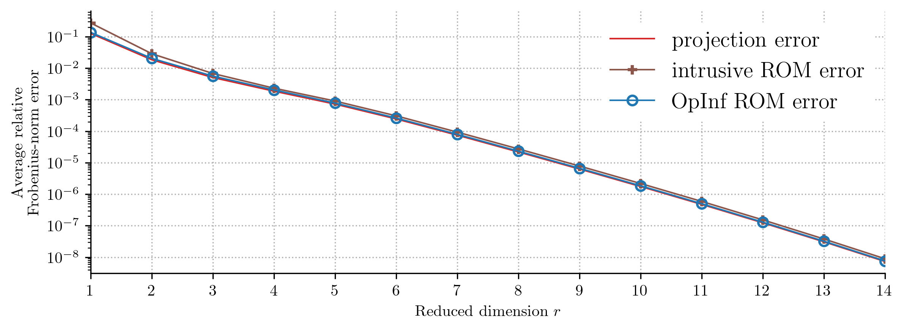